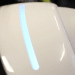
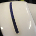
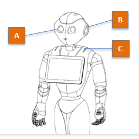

Understanding the boot process¶
Boot process - status¶
During the boot process, the color of the Status LEDs lets you know if Pepper is:
- Switching on,
- Upgrading,
- or in an Unusable state.
{kind=link}
Boot process - progress indicator¶
The boot process may take a long time, especially when upgrading the system. The animation displayed by the LEDs provides information about the boot process.
 Switching on¶
{kind=link}
Step 1
The Eye LEDs and the Status LEDs fade in, smoothly and repeatedly, from Black to White.
A progress bar is displayed on the Ear LEDs:
Progression bar Means ... 0 % The robot is in the early boot step, initializing the hardware. 25 % Hardware is initialized. 50 % Filesystems are ready to use. 75 % Network and ssh are started. 100 % NAOqi is started.
Step 2: all LEDs are off for a while, then Blue, then quickly Red and Green.
Step 3: the robot says “OGNAK GNOUK”.
 Upgrading¶
{kind=link}
In case of system upgrade, the boot process can take much more time (30 minutes in case of factory reset) and the LEDs animation is different.
Step 1
- For a while, the Eye LEDs and the Status LEDs fade in, smoothly and repeatedly, from Black to White.
Step 2
The Status LEDs fade in, repeatedly, from Black to Blue.
The progress is displayed on the Ear LEDs:
Ear LEDs Meaning A - The front half-circle is blinking. Checking integrity of the image to be flashed. B - Animation like a progress bar. The OS image is being flashed. C - The rear half-circle is blinking. Checking integrity of the flashed data. D - Factory reset only
The front and rear half-circles are alternately blinking.
Restoring factory settings.
Step 3: the Status LEDs is still fading in, smoothly and repeatedly, from Black to Blue, while all the steps of a Switching on are performed.
Unusable¶
When something wrong occurs during the boot process, and if the system fails to recover a usable state, then the Status LEDs fade in and out, smoothly and repeatedly, from Black to Red.
In such case, try to reboot the robot.
If the problem persists, contact the support.
LEDs - Pepper
{kind=link}
A - Eye LEDs, B - Ear LEDs, C - Status LEDs